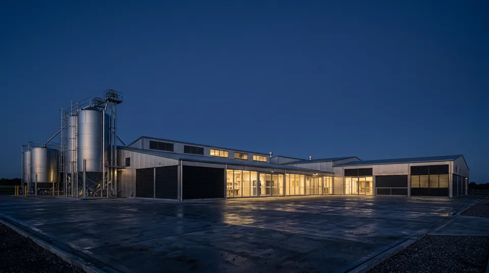
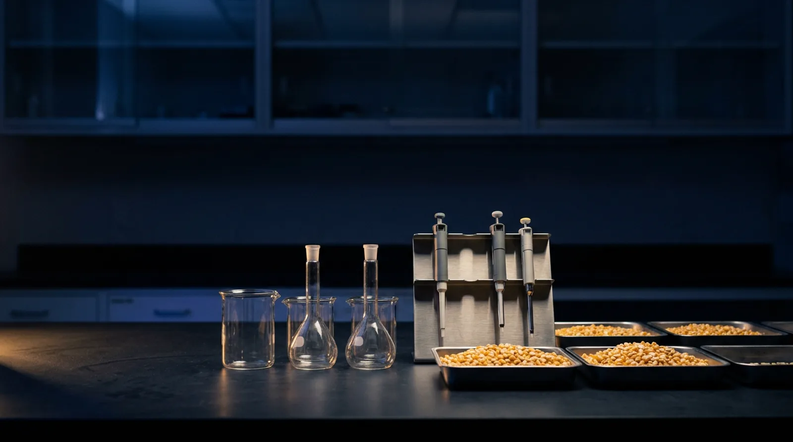
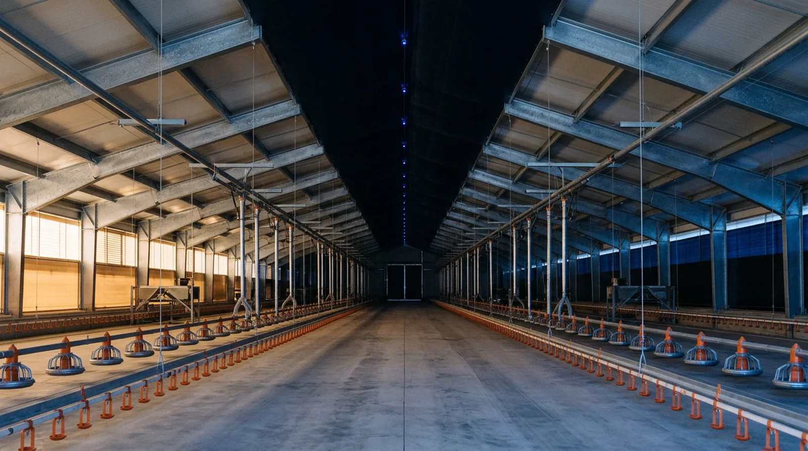
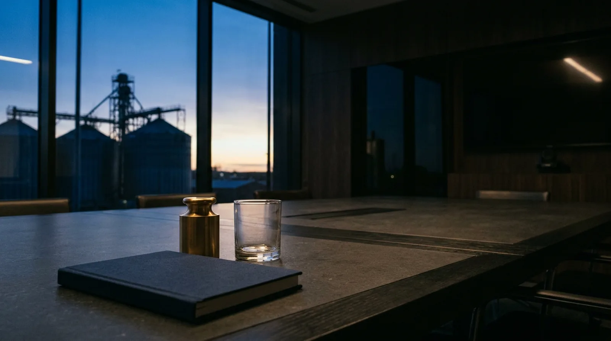

القصة المصورة التنفيذية: «بوابة المنظومة الحيوية» (10.8vh)
خريطة التمرير عبر 7 فصول بإيقاع مضبوط: بطل متعدد الطبقات يبدأ بوضوح تام دون WebGL، انتقال توقيعي عبر عدسة المعايرة إلى المختبر، انسياب للتخصصات الأربعة، وقفة صمت طباعي قبل الذروة، ثم ذروة المشهد 05 بمسطرة ارتقاء مدعومة بمشهد Three.js وحيد وقابل للتخطي، وصولاً لقرار دخول مستقر.
المشهد 01: أفق المنشأة والعمق — Multi-Plane Depth Horizon (0.0 → 2.2vh)
من مقعد الدراسة إلى قيادة المنشأة
منظومة إعداد وتأهيل تطبيقي تصل علم الطب البيطري وتغذية الحيوان وإنتاج الدواجن بواقع الإدارة والتشغيل اليومي.

من مقعد الدراسة إلى قيادة المنشأة
تأهيل عملي يربط الطب البيطري وتغذية الحيوان بإدارة المنشأة.
ثابت (Pinned / Sticky)
المسرح الرئيسي خلال التمرير الابتدائي + شريط البوابة /login و /register.
متحرك (Moving)
الصوامع تكبر (1→1.12) بمعدل 0.45x، النص ينزاح بهدوء 0.85x، والمنصة الأمامية تسبقه بـ 1.28x.
مختفٍ (Exiting)
ينسحب النص الفرعي عند p=0.72 لإفساح المسرح لحلقة المعايرة المركزية.
المشهد 02: العبور عبر عدسة المعايرة — Signature Transition (2.2 → 4.2vh)

الموبايل (390px)
يُعاد تموضع مركز العدسة إلى 50% 56% ليظهر المختبر متزناً تحت العنوان.
تقليل الحركة
عرض صورة المختبر مباشرةً في قسم منفصل بدون قزحية متحركة أو تثبيت طويل.
المشهد 03 و 04: الأركان الميدانية الأربعة ← وقفة السكون (4.2 → 6.6vh)

المعلومة النظريّة متاحة للجميع... الفارق في قرار اللحظة الميدانية.
المشهد 05 (الذروة — PEAK ACT): مسطرة الارتقاء: من الطالب إلى المدير (6.6 → 9.2vh)
الربط المبكر بين المقررات ومنطق التشغيل قبل دخول سوق العمل.
تحويل الملاحظة الحقلية السريعة إلى بروتوكول منضبط قابل للقياس.
توحيد لغة العلم والإدارة والمبيعات التخصصية داخل الفريق الواحد.
المشهد 06 و 07: الطاولة التنفيذية ← بوابة الوصول المستقرة (9.2 → 10.8vh)

انضباط القرار فوق أرضية الواقع
التشخيص قبل الدواء، العلف كمعادلة تحويل اقتصادي، وإدارة تتحدث بلغة علمية واحدة داخل العنبر والمصنع.